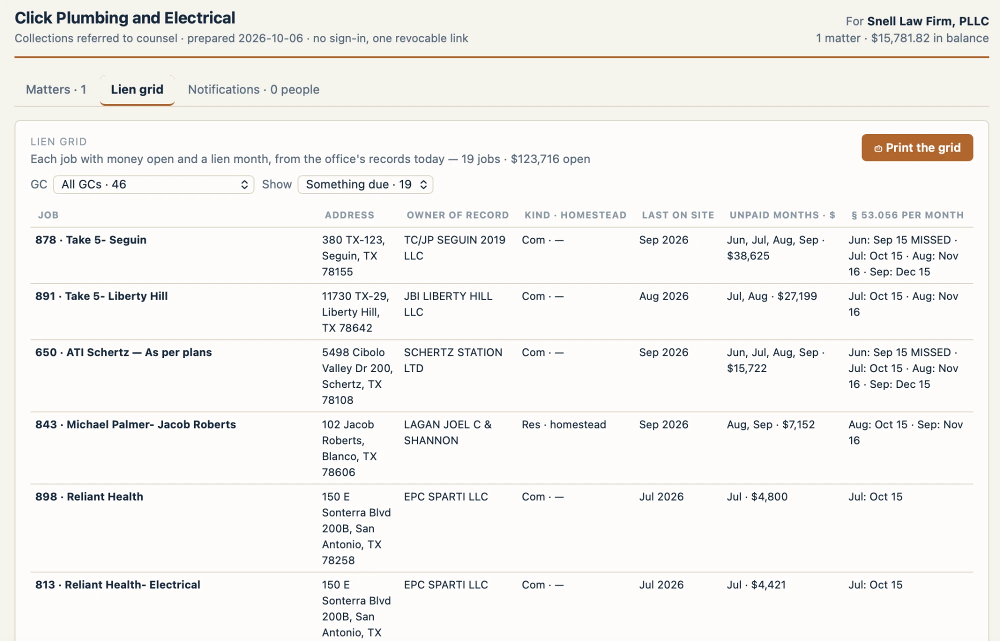

Legal portal · after punch list #85 · mockup
The owner, 2026-10-06, on the firm's Lien grid: the address under the job name; Com and Res spelled out, with Homestead or No homestead on the line beneath; the unpaid total first and the months under it; the § 53.056 column without the missed months; and the GC picker made attractive, showing each GC's job count and dollars, as tall as it needs to be.

| Job | Owner of record | Property | Last on site | Unpaid · months | § 53.056 per month | Affidavit by | Bond | Paid out to GC | 10 % reserved | Contract completed |
|---|---|---|---|---|---|---|---|---|---|---|
| 878 · Take 5- Seguin380 TX-123, Seguin, TX 78155 | TC/JP SEGUIN 2019 LLC | Commercial | Sep 2026 | $38,625Jun, Jul, Aug, Sep | Jul: Oct 15Aug: Nov 16Sep: Dec 15 | Jan 15 | ? | ? | ? | ? |
| 891 · Take 5- Liberty Hill11730 TX-29, Liberty Hill, TX 78642 | JBI LIBERTY HILL LLC | Commercial | Aug 2026 | $27,199Jul, Aug | Jul: Oct 15Aug: Nov 16 | Dec 15 | ? | ? | ? | ? |
| 650 · ATI Schertz — As per plans5498 Cibolo Valley Dr 200, Schertz, TX 78108 | SCHERTZ STATION LTD | Commercial | Sep 2026 | $15,722Jun, Jul, Aug, Sep | Jul: Oct 15Aug: Nov 16Sep: Dec 15 | Jan 15 | ? | ? | ? | ? |
| 843 · Michael Palmer- Jacob Roberts102 Jacob Roberts, Blanco, TX 78606 | LAGAN JOEL C & SHANNON | ResidentialHomestead | Sep 2026 | $7,152Aug, Sep | Aug: Oct 15Sep: Nov 16 | Dec 15 | ? | ? | ? | ? |
| 898 · Reliant Health150 E Sonterra Blvd 200B, San Antonio, TX 78258 | EPC SPARTI LLC | Commercial | Jul 2026 | $4,800Jul | Jul: Oct 15 | Nov 16 | ? | ? | ? | ? |
| 1101 · Whitfield residence — repipe7 Willow Ct, San Marcos, TX 78666 | Sam Whitfield | ResidentialNo homestead | Aug 2026 | $1,795Aug | none needed (with the owner) | Nov 16 | N | ? | ? | ? |
| 702 · Old Mill Suites4 Mill Run, Kyle, TX 78640 | OLD MILL HOLDINGS LP | Commercial | Jun 2026 | $9,221May, Jun | — | Oct 15 | ? | ? | ? | ? |
Deadlines are per job and per work month (§ 53.056, § 53.052), weekends rolled; a property of unknown kind shows commercial dates and a residential one is a month earlier. A month whose § 53.056 window has closed is left off; — is a job with no window still open. A ? is a fact the office has not entered — payment bond, paid out to the GC, the 10 % reserved, the owner's contract completion.